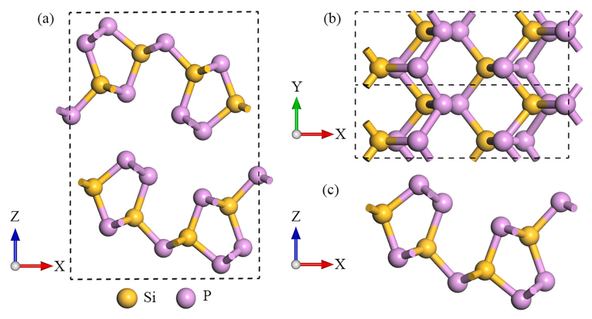
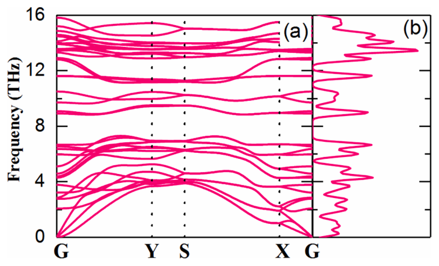
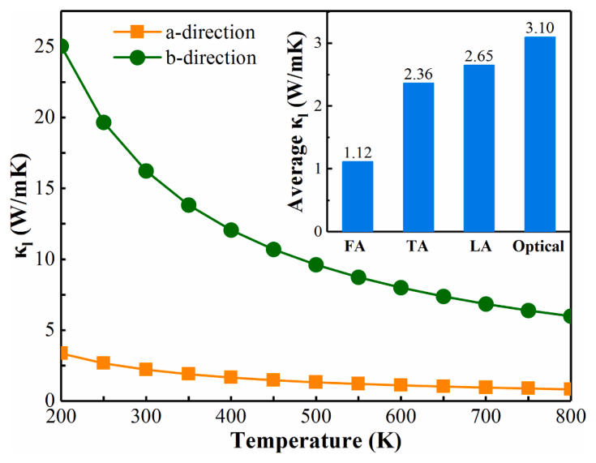
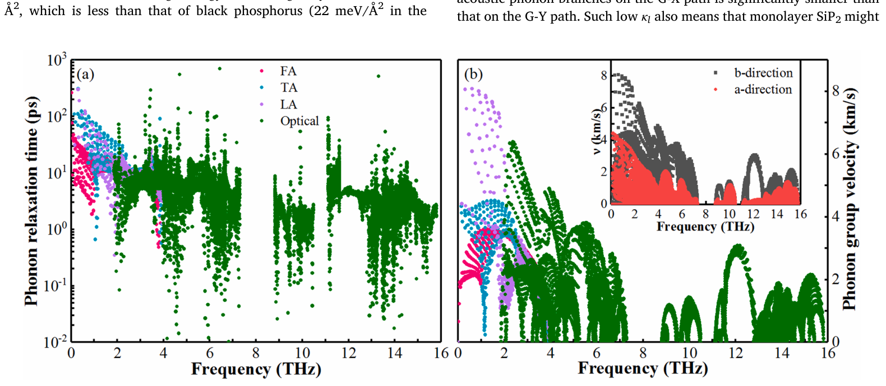
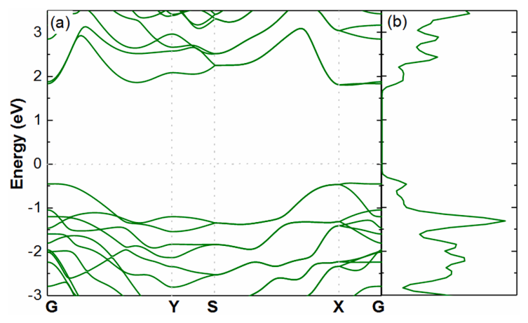
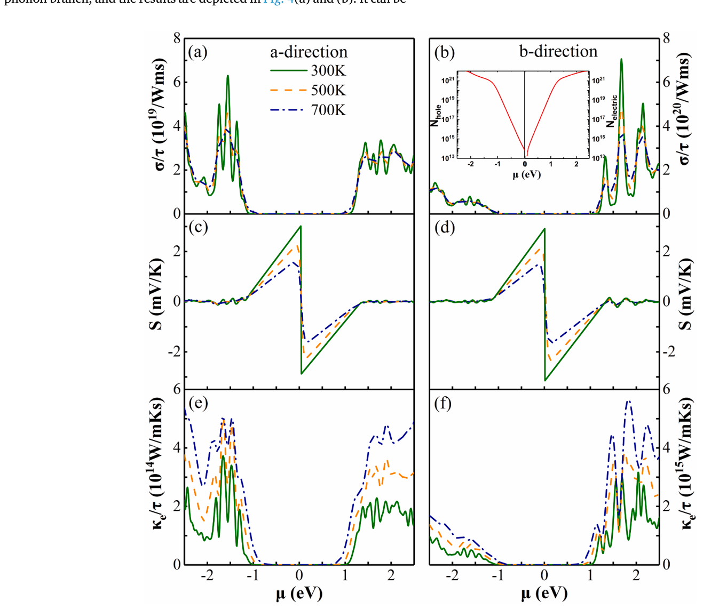
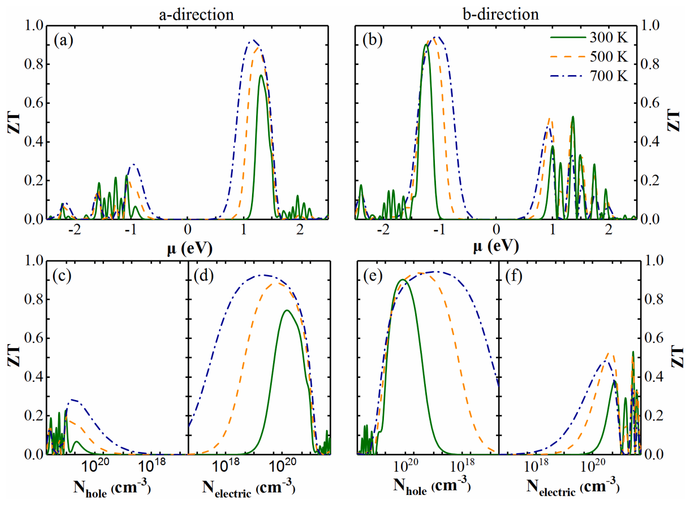

Ringkasan Eksekutif untuk Peneliti (4 Poin Inti)
1. Stabilitas dan Kemudahan Eksfoliasi: Material 2D elemental (silisena, fosforen) terkenal unggul namun tidak stabil di lingkungan bebas. Senyawa biner golongan IV-V SiP₂ berfasa Pnma (simetri Pmc2₁) memiliki stabilitas termodinamika tinggi dengan energi pemisahan lapisan (cleavage energy) hanya 18.6 meV/Ų—lebih mudah dieksfoliasi dibandingkan fosfor hitam (22.2 meV/Ų).
2. Anisotropi Fonon Ekstrem: Struktur kristal SiP₂ tersusun dari tabung pentagonal (Si₂P₃)ₙ di sepanjang sumbu-b yang dihubungkan atom P di sumbu-a. Pola ini menyebabkan dispersi cabang akustik di sumbu-a jauh lebih datar, memicu moda vibrasi lunak dan menghasilkan konduktivitas termal kisi ultra-rendah sebesar 2.22 W·m⁻¹·K⁻¹ pada 300 K (7.3 kali lebih rendah dibanding sumbu-b).
3. Koefisien Seebeck Raksasa yang Isotropik: Berbeda dengan konduktivitas listrik yang sangat anisotropik, koefisien Seebeck SiP₂ bersifat hampir seragam di kedua arah (3.02 mV/K arah a dan 3.15 mV/K arah b pada 300 K), bersumber dari pita valensi datar di sumbu-a dan lembah pita degenerasi ganda pada CBM di sumbu-b.
4. Efisiensi Termoelektrik Tinggi (ZT = 0.90): Berkat kombinasi waktu relaksasi elektron yang panjang dan konduktivitas listrik terarah di sumbu-b, monolayer SiP₂ mencapai nilai ZT sebesar 0.90 pada doping tipe-p (1.21 × 10²⁰ cm⁻³) dan 0.74 pada sumbu-a doping tipe-n pada suhu ruang, menjadikannya material bebas timbal/telurium yang sangat menjanjikan.
01. Mengapa Material Termoelektrik Dua Dimensi Golongan IV-V?
Konversi energi panas terbuang menjadi listrik berbasis fenomena termoelektrik telah lama diprediksi mengalami lonjakan efisiensi dramatis saat dimensi material direduksi menjadi lembaran dua dimensi (2D). Seperti yang digagas oleh Hicks dan Dresselhaus sejak 1993, efek kurungan kuantum (quantum confinement) pada material 2D mampu melipatgandakan faktor daya listrik (power factor, S²σ) sekaligus memicu hamburan batas kisi yang meruntuhkan konduktivitas termal fonon (κ_l).
Pasca suksesnya eksfoliasi grafena, deretan material 2D monoelemental seperti silisena, fosforen, dan stanena berhasil disintesis dan menunjukkan mobilitas muatan yang menakjubkan. Namun, kelemahan fatal material monoelemental ini adalah ketidakstabilan kimianya: mereka sangat mudah teroksidasi dan terdegradasi di atmosfer terbuka.
Hal ini mendorong pencarian ke senyawa biner golongan IV-V, khususnya silikon difosfida (SiP₂). Senyawa 3D SiP₂ sejatinya telah dikenal selama beberapa dekade, baik dalam fasa ortorombik kelompok ruang Pbam maupun fasa yang lebih stabil secara termodinamika dengan kelompok ruang Pnma (No. 62) dengan celah pita optik sekitar 1.45 eV. Studi komputasi ab initio oleh tim peneliti di Xiangtan University ini menyelidiki apakah lembaran tunggal (monolayer) SiP₂ fasa Pnma dapat diisolasi dan seberapa unggul kinerja transport termoelektriknya.
02. Arsitektur Kisi Monolayer SiP₂ dan Kelayakan Eksfoliasi
Kristal tunggal SiP₂ dalam fasa Pnma dioptimalkan secara komputasional menggunakan DFT fungsional PBE dengan koreksi dispersi van der Waals Grimme D3 (Gambar 1). Parameter kisi terhitung untuk kristal bulk adalah a = 10.09 Å, b = 3.43 Å, dan c = 14.25 Å, sangat konsisten dengan data eksperimen (a = 10.09 Å, b = 3.43 Å, c = 14.00 Å).

Parameter krusial yang menentukan apakah monolayer ini dapat dibuat di laboratorium adalah energi ikatan antarlapis (interlayer binding energy) dan energi eksfoliasi (cleavage energy).
| Material Kristal | Energi Eksfoliasi (meV/Ų) | Kelayakan Sintesis Eksperimen |
|---|---|---|
| Monolayer SiP₂ (Studi Ini) | 18.6 | Sangat mudah dieksfoliasi mekanik / sonikasi cairan |
| Fosfor Hitam (Black Phosphorus) | 22.2 | Standar material 2D yang telah sukses dieksfoliasi luas |
| Fosfor Hitam (Rujukan Literatur Lain [38]) | 22.0 | Validasi metode komputasi energi permukaan |
Energi pengikatan antarlapis kristal SiP₂ terhitung hanya 54 meV per atom dengan energi eksfoliasi 18.6 meV/Ų (Tabel 1). Nilai ini secara signifikan lebih rendah dibandingkan energi eksfoliasi fosfor hitam (22.2 meV/Ų), mengonfirmasi bahwa monolayer SiP₂ sangat fisibel untuk diisolasi dari kristal bongkahannya melalui metode pengelupasan pita perekat mekanik biasa (Scotch-tape) maupun sonikasi fasa cair.
03. Dinamika Fonon: Anisotropi Termal 7.3 Kali Lipat
Stabilitas dinamik monolayer SiP₂ diverifikasi dengan menghitung dispersi fonon melalui konstanta gaya interatomik orde kedua (2nd IFCs) menggunakan Phonopy dan VASP (Gambar 2).

Dengan memecahkan persamaan transport Boltzmann fonon (BTE) menggunakan paket ShengBTE berbasis interaksi anharmonik orde ketiga (3rd IFCs), konduktivitas termal kisi (κ_l) diperoleh sebagai fungsi temperatur (Gambar 3).

Dekomposisi waktu relaksasi dan kecepatan grup fonon (Gambar 4) membongkar penyebab fisis di balik rendahnya konduktivitas termal sumbu-a. Kecepatan grup fonon di sepanjang sumbu-a jauh lebih lambat akibat keberadaan moda vibrasi kisi lunak (soft vibrational modes), yang secara efektif mencekik laju perambatan panas di sepanjang jembatan atom P.

04. Struktur Elektronik dan Munculnya Koefisien Seebeck Raksasa
Kalkulasi struktur pita elektronik menggunakan fungsional hibrid canggih HSE06 (Gambar 5) menunjukkan bahwa monolayer SiP₂ merupakan semikonduktor dengan celah pita kuasi-langsung (quasi-direct bandgap) sebesar 2.23 eV (selisih antara celah langsung dan tak langsung hanya 1.8 meV). Titik minimum pita konduksi (CBM) dan maksimum pita valensi (VBM) berada di sepanjang jalur X–Γ.

Menggunakan teori potensial deformasi (deformation potential theory), mobilitas pembawa muatan (μ) dan waktu relaksasi elektron (τ) dihitung secara kuantitatif (Tabel 2).
| Tipe Pembawa Muatan & Arah | E_l (eV) | C₂D (J/m²) | m* (m₀) | Mobilitas μ (10³ cm²/V·s) | Waktu Relaksasi τ (10⁻¹³ s) |
|---|---|---|---|---|---|
| Elektron (arah sumbu-a) | -0.32 | 19.8 | 1.268 | 7.825 | 5.63 |
| Hole (arah sumbu-a) | -3.96 | 19.8 | 1.527 | 0.016 | 0.138 |
| Elektron (arah sumbu-b) | -11.64 | 121.5 | 0.132 | 0.355 | 0.266 |
| Hole (arah sumbu-b) | -1.40 | 121.5 | 0.810 | 1.472 | 6.77 |
Massa efektif elektron di sumbu-b sangat ringan (hanya 0.132 m₀) berkat dispersi pita yang curam. Sementara itu, hole di sumbu-b memiliki waktu relaksasi terpanjang (τ = 6.77 × 10⁻¹³ s), yang menjadi kunci utama bagi lonjakan faktor daya termoelektrik.

Koefisien Seebeck raksasa melampaui 3 mV/K (kira-kira 10–20 kali lebih tinggi dari semikonduktor termoelektrik konvensional) muncul dari kombinasi unik: pita datar (flat bands) di sumbu-a yang memaksimalkan asimetri transport muatan, serta lembah pita degenerasi ganda pada CBM di sumbu-b.
05. Evaluasi Figur Kebaikan ZT: Puncak 0.90 pada Suhu Ruang
Dengan menggabungkan seluruh koefisien transport elektron (S, σ, κ_e) dan konduktivitas termal kisi fonon (κ_l), efisiensi konversi termoelektrik terhitung secara menyeluruh (Gambar 7).

Angka ZT sebesar 0.90 pada suhu 300 K untuk sebuah monolayer murni merupakan capaian yang luar biasa tinggi—menyaingi semikonduktor komersial berbasis bismut telurida (Bi₂Te₃) tanpa membutuhkan paduan unsur beracun atau teknik fabrikasi superlatis yang rumit.
06. Kesimpulan dan Peta Jalan Eksperimental
Kajian mendalam ini menegaskan bahwa monolayer SiP₂ merupakan permata tersembunyi dalam rumpun material 2D golongan IV-V:
- Kelayakan Eksperimen: Energi eksfoliasi 18.6 meV/Ų membuka jalan lebar bagi sintesis pengelupasan kristal di laboratorium.
- Karakteristik Phonon-Glass: Moda vibrasi lunak di sumbu-a membatasi konduksi panas fonon hingga serendah 2.22 W·m⁻¹·K⁻¹.
- Karakteristik Electron-Crystal: Jalur konduksi terarah di sumbu-b dengan waktu relaksasi hole 6.77 × 10⁻¹³ s menghasilkan faktor daya yang tinggi.
- Seebeck Raksasa: Nilai Seebeck melampaui 3 mV/K memberikan daya ungkit termoelektrik luar biasa pada suhu ruang.
Temuan ini diharapkan memicu antusiasme eksperimental di laboratorium nanoteknologi untuk mengeksfoliasi kristal SiP₂ murni dan menguji perangkat termoelektrik fleksibel generasi baru yang ramah lingkungan dan stabil di udara.
Zhang, P., Jiang, E., Ouyang, T., Tang, C., He, C., Li, J., Zhang, C., & Zhong, J. (2021). Potential thermoelectric candidate monolayer silicon diphosphide (SiP₂) from a first-principles calculation. Computational Materials Science, 188, 110154. https://doi.org/10.1016/j.commatsci.2020.110154